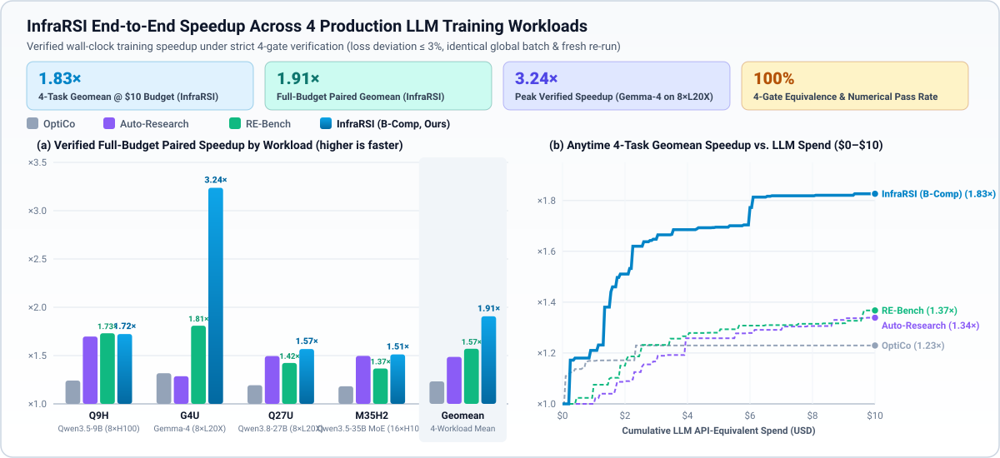
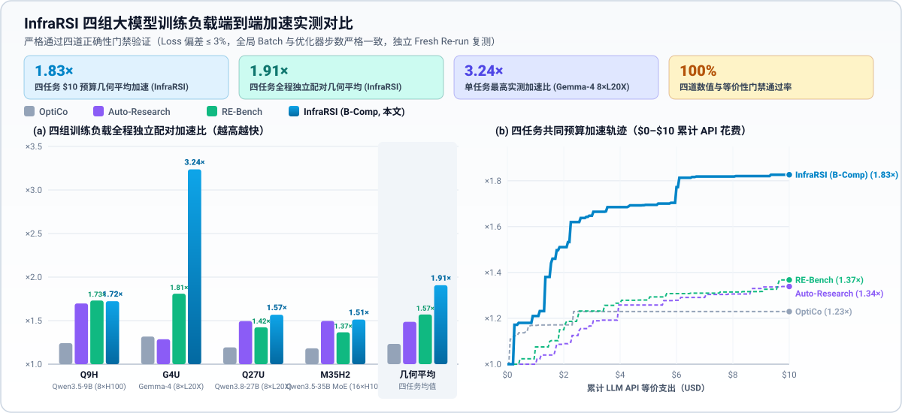

Autonomous Recursive Self-Improvement for LLM Training Infrastructure 面向大模型训练基础设施的自主递归演进优化引擎
Hand InfraRSI your training codebase or train.sh launch script. It autonomously profiles hardware bottlenecks, synthesizes orthogonal multi-family patches via Bounded-Composition (B-Comp) search, and verifies 100% numerical & training equivalence—delivering principal-systems-engineer speedups so researchers can focus purely on models and data.
只需将训练代码仓或 train.sh 启动脚本交给 InfraRSI，系统即可自动剖析 GPU 算子与通信瓶颈，通过 有界组合搜索（B-Comp） 合成正交加速补丁，并通过四道等价性门禁严格验证——无需手写底层系统调优代码，即可让每个研究团队轻松获得顶尖系统架构师级的训练吞吐与 MFU 提升。
World-Class Systems Acceleration—Accessible to Every AI Team 让每一个模型研发团队都拥有自动化训推系统加速能力
Modern distributed training stacks (PyTorch, Megatron-LM, DeepSpeed, Accelerate, FSDP) expose hundreds of interacting knobs across attention kernels, compiler flags, memory layouts, and collective communication. InfraRSI turns deep systems engineering into an autonomous, reproducible, and budget-friendly CLI workflow. 现代分布式训练框架（PyTorch、Megatron-LM、DeepSpeed、Accelerate、FSDP）涉及注意力算子、图编译、显存重计算与集合通信等数百个相互耦合的底层旋钮。InfraRSI 将繁琐的底层系统工程转化为全自动、可复现、低成本的命令行闭环。
Drop-In Usability (Zero Code Instrumentation) 极低上手门槛（零侵入式一键启动）
No need to refactor your training loop or write search spaces. Point infrarsi optimize directly at your existing train.sh script or repository directory—InfraRSI automatically detects torchrun, deepspeed, accelerate, and GPU topologies.
无需改造训练代码，也无需手写搜索空间。直接将现有的 train.sh 启动脚本或代码目录丢给 infrarsi optimize，即可自动识别 torchrun、deepspeed、accelerate 与 GPU 拓扑并开始优化。
Ultra-Economical Token Efficiency 极低 Token 消耗，经济高效
Unlike brute-force coding agents that dump entire repositories into every prompt, InfraRSI uses targeted AST/profiler slices, UCB family bandits, and a 3-Zone TokenGovernor that discounts cached CLI prefix tokens—delivering ~1.83× speedups for under $10 in token spend. 告别把整个代码库反复塞进上下文的高昂消耗。InfraRSI 通过瓶颈切片提取、UCB 家族多臂赌博机与三区自适应 TokenGovernor（自动折算 CLI 缓存前缀），以不到 $10 的极低 Token 成本实现 1.83× 平均加速。
Bring Your Own LLM (Subscription or API) 全面兼容各类大模型与订阅账号
Already logged into Claude Code or OpenAI Codex on your dev machine? Use them directly with zero extra API billing! Prefer low-cost APIs? Plug in DeepSeek Official API, OpenRouter, SiliconFlow, Together, or local vLLM endpoints. 开发机已经登录了 Claude Code 或 OpenAI Codex？无需额外配置 API Key 即可直接调用！需要使用高性价比 API？原生支持 DeepSeek 官方 API、硅基流动、OpenRouter 以及本地 vLLM/SGLang。
4-Gate Training Equivalence Guarantee 四道正确性门禁，严防奖励黑客
Every candidate patch is audited in an isolated Git worktree across 4 strict gates: clean process exit, invariant global batch size & optimizer steps, loss curve fidelity (≤ 3% deviation), and an independent fresh re-run wall-clock verification.
每个候选补丁均在隔离的 Git Worktree 中接受四道门禁检验：进程零报错退出、全局 Batch Size 与优化器步数严格不变、Loss 收敛偏差 ≤ 3%，以及独立 Fresh Re-run 端到端复测，杜绝任何牺牲模型质量的伪加速。
Install Once, Run with Any LLM You Already Have 一行安装，自由选择最顺手的 LLM 驱动方式
First, install InfraRSI in editable mode from the repository. Then pick any of the 4 supported LLM backends below to start optimizing your training script immediately. 首先克隆并安装 InfraRSI，随后从下方四种大模型接入路径中任选其一，即可直接把训练启动脚本交给它自动完成系统优化。
git clone https://github.com/YuchuanTian/infrasmith.git
cd infrasmith && pip install -e .Path 1: Use Your Already-Logged-In Claude Code directly 路径一：直接使用已登录的 Claude Code（无需配置 API Key）
If you have claude installed and logged in on your machine, InfraRSI invokes claude -p --output-format json in isolated single-shot prompt mode (tools disabled so InfraRSI's B-Comp harness controls all git worktree mutations and 4-gate verifications safely).
只要你的机器上已安装并登录了 claude CLI，InfraRSI 即可直接复用当前登录态（通过非交互式 JSON 协议生成 B-Comp 候选补丁，并由 InfraRSI 沙箱统一执行四道门禁验证）。
# Verify your Claude Code CLI session is active
claude --version
# Drop your launch script directly into InfraRSI using claude-cli
infrarsi optimize ./train.sh \
--llm claude-cli \
--rounds 8 \
--target-speedup 1.8project:
name: qwen-pretrain
root: .
entry_command: bash train.sh
llm:
backend: claude-cli
model: claude-sonnet-4-6
search:
strategy: bcomp
rounds: 8
target_speedup: 1.8Path 2: Use Your Already-Logged-In OpenAI Codex CLI 路径二：直接使用已登录的 OpenAI Codex CLI（无需配置 API Key）
Already signed into OpenAI Codex CLI (codex login)? Pass --llm codex-cli (or --llm codex:gpt-5.4). InfraRSI drives codex exec --json headlessly and automatically discounts cached CLI system prefix tokens in the TokenGovernor!
如果终端已通过 codex login 登录 OpenAI Codex CLI，只需指定 --llm codex-cli（或 --llm codex:gpt-5.4）。InfraRSI 会通过 codex exec --json 自动驱动，并在预算统计中自动折算 CLI 缓存前缀 Token！
# Verify your Codex CLI is installed and logged in
codex --version
# Optimize your training codebase using logged-in Codex CLI
infrarsi optimize ./train.sh \
--llm codex-cli \
--rounds 8 \
--target-speedup 1.8 \
--token-budget 500kproject:
name: llama-finetune
root: .
entry_command: bash train.sh
llm:
backend: codex-cli
model: gpt-5.4
search:
strategy: bcomp
rounds: 8
token_budget: 500000
Path 3: Official DeepSeek API (deepseek-chat & deepseek-reasoner)
路径三：使用 DeepSeek 官方 API（deepseek-chat / deepseek-reasoner）
InfraRSI has native first-class support for DeepSeek's official platform (https://api.deepseek.com/v1). Export DEEPSEEK_API_KEY and InfraRSI will automatically select the DeepSeek backend—or pass --llm deepseek:deepseek-chat / --llm deepseek:deepseek-reasoner.
InfraRSI 原生内置对 DeepSeek 官方 API（https://api.deepseek.com/v1）的一等公民支持。只需设置环境变量 DEEPSEEK_API_KEY，即可自动连接 deepseek-chat（V3）或 deepseek-reasoner（R1），以极低成本完成训练系统调优。
export DEEPSEEK_API_KEY="sk-your-deepseek-key"
# Use DeepSeek V3 (deepseek-chat) or R1 (deepseek-reasoner)
infrarsi optimize ./train.sh \
--llm deepseek:deepseek-chat \
--rounds 10 \
--budget 5.0project:
name: moe-training
root: .
entry_command: bash train.sh
llm:
backend: deepseek
model: deepseek-chat
api_key_env: DEEPSEEK_API_KEY
base_url: https://api.deepseek.com/v1
search:
strategy: bcomp
rounds: 10Path 4: Any 3rd-Party OpenAI / Anthropic-Compatible API 路径四：任意第三方 API（OpenRouter / 硅基流动 / Together / vLLM 等）
Connect to any provider speaking the OpenAI Chat Completions or Anthropic Messages protocol using --api-base and --api-key-env (or OPENAI_BASE_URL / OPENAI_API_KEY). Works seamlessly with OpenRouter, SiliconFlow, Together AI, DeepInfra, Fireworks, or self-hosted vLLM/SGLang!
通过 --api-base 与 --api-key-env（或环境变量 OPENAI_BASE_URL / OPENAI_API_KEY），可无缝对接 OpenRouter、SiliconFlow（硅基流动）、Together AI、DeepInfra、阿里云百炼或本地部署的 vLLM / SGLang / Ollama 服务。
# Example A: OpenRouter
export OPENROUTER_API_KEY="sk-or-v1-..."
infrarsi optimize ./train.sh \
--llm openai-compat:anthropic/claude-sonnet-4 \
--api-base https://openrouter.ai/api/v1 \
--api-key-env OPENROUTER_API_KEY
# Example B: SiliconFlow (硅基流动)
export SILICONFLOW_API_KEY="sk-..."
infrarsi optimize ./train.sh \
--llm openai-compat:deepseek-ai/DeepSeek-V3 \
--api-base https://api.siliconflow.cn/v1 \
--api-key-env SILICONFLOW_API_KEYproject:
name: custom-api-run
root: .
entry_command: bash train.sh
llm:
backend: openai-compat
model: deepseek-ai/DeepSeek-V3
base_url: https://api.siliconflow.cn/v1
api_key_env: SILICONFLOW_API_KEY
search:
strategy: bcomp
rounds: 8Stop Exactly When Your Goal Is Reached—Without Blowing Your Budget 精准设定目标阈值与预算上限，见好就收不浪费一分算力
InfraRSI lets you combine four orthogonal stopping criteria. Whichever target or ceiling is met first triggers a clean wind-down and exports the best verified patch immediately. InfraRSI 支持四大停止条件的任意组合。一旦达到目标性能指标或触及时间/预算上限，系统会立即安全收敛并导出当前最优的已验证补丁。
1. Target Speedup Multiple 1. 达到目标加速倍数
Halt as soon as a verified candidate achieves ≥ 1.8× (or 1.8x) wall-clock throughput speedup over the unoptimized baseline.
当通过四道门禁验证的候选补丁达到基线训练速度的指定倍数（例如 1.8 或 1.8x）时，立即完成优化并导出补丁。
2. Target MFU Threshold 2. 达到目标 MFU 指标
Specify a target Model FLOPs Utilization as a fraction (0.45) or percentage (45%). InfraRSI stops once verified hardware utilization hits your goal.
支持以小数（0.45）或百分比（45%）设定目标 MFU（模型算力利用率），一旦实测 MFU 达标即刻停止搜索。
3. Wall-Clock Runtime Limit 3. 设定最大运行时长
Pass --max-wallclock 90m, 2h, or --wall-hours 2.0. Ideal for fitting optimization runs inside Slurm/PAI job windows or overnight schedules.
支持传入 --max-wallclock 90m、2h 或 --wall-hours 2.0，完美契合集群调度作业时间窗或夜间无人值守任务。
4. Smart Token Budget 4. 智能 Token 预算控制
Set an approximate token budget (e.g. 500k, 1.5M). Managed by the multi-zone TokenGovernor so search lands smoothly without abrupt mid-round truncation.
支持设定近似 Token 预算（如 500k、1.5M），由三区自适应 TokenGovernor 精细调控，防止搜索在中途突兀中断。
🧠 How InfraRSI Solves the "Approximate Token Budget" Challenge (TokenGovernor)
🧠 巧思揭秘：InfraRSI 如何精准控制近似 Token 预算（TokenGovernor）
Controlling token budgets in an iterative code-optimization loop is notoriously tricky: a hard cutoff at 100% can kill a promising multi-family composition right before verification, while CLI agents (like Codex CLI and Claude Code) attach 10k+ cached system tokens per turn. InfraRSI introduces two key mechanisms: 在多轮代码进化搜索中控制 Token 预算存在两大难点：一是简单的“一刀切”硬截断会导致正在验证的高潜力补丁半途而废；二是 Claude / Codex CLI 每次调用都会附带上万个缓存系统提示词 Token。为此，InfraRSI 设计了双层巧思机制：
-
1. Effective Token Accounting (CLI Cache Discounting):
1. 有效 Token 折算（CLI 缓存前缀 90% 豁免）：
Computes
effective_tokens = uncached_input + 0.1 × cached_input + output_tokens. Cached system headers in Claude Code / Codex CLI don't artificially drain your optimization budget. 按有效 Token = 未缓存输入 + 0.1 × 缓存前缀输入 + 输出 Token计费，避免 Claude Code / Codex CLI 固定系统前缀虚耗用户的搜索预算。 -
2. Economy Zone Compression (70%–90%):
2. 节流区自适应上下文压缩（70%–90%）：
Automatically trims ancestor failure reflections to top-2 summaries, condenses hardware logs, and tightens
max_tokensso you get 2× more search rounds out of the remaining tokens. 当预算消耗超过 70% 时，自动将祖先反思记录压缩为 Top-2 摘要、精简 Profiler 日志并收紧单轮输出上限，让剩余 30% 预算多跑一倍轮次。 - 3. Wind-Down Zone Soft Landing (90%–100%): 3. 收官区平滑收敛（90%–100%）： Restricts new risky branches and focuses strictly on verifying & committing the highest-speedup archive candidate before gracefully halting. 超过 90% 预算后停止激进的新分支探索，全力完成当前最优候选补丁的最终验证与导出，实现优雅停机。
infrarsi optimize ./train.sh \
--llm deepseek:deepseek-chat \
--target-speedup 1.8 \
--target-mfu 45% \
--max-wallclock 2h \
--token-budget 500k5-Stage Macro Pipeline & Micro B-Comp Evolutionary Search 宏观五步闭环链路与微观 B-Comp 有界组合搜索算法
InfraRSI preserves 100% algorithmic fidelity with our technical report: a deterministic 5-stage macro harness coupled with the Bounded-Composition (B-Comp) micro search engine. InfraRSI 严格遵循技术报告中的双层核心设计：由 5 个阶段组成的宏观自动化链路，以及微观层面的 B-Comp（Bounded-Composition） 演化搜索算法。
Entrypoint & Topology Recon 入口解析与硬件拓扑探测
Parses train.sh, resolves torchrun / deepspeed / accelerate / megatron launchers, and fingerprints GPUs, VRAM, and interconnect.
自动解析启动脚本中的 torchrun / deepspeed / accelerate / megatron 入口，并采集 GPU 型号、显存与互联拓扑。
Baseline & Bottleneck Profile 基线定标与性能瓶颈剖析
Executes the unmodified training script to record baseline tokens/sec, step latency, peak VRAM, MFU, and reference loss curve checkpoints. 运行原始未修改脚本，精确记录基线吞吐（tokens/s）、单步耗时、峰值显存、MFU 以及参考 Loss 曲线。
Bounded-Composition Search B-Comp 有界组合演化搜索
Samples optimization families via UCB bandit, selects top archive parents, and synthesizes orthogonal single- or multi-family git patches. 通过 UCB 多臂赌博机采样优化家族，从精英档案库选取父节点，并遵循兼容性矩阵合成单家族或多家族组合补丁。
4-Gate Equivalence Audit 四道正确性与等价性门禁
Enforces Gate 1 (Exit/Syntax), Gate 2 (Batch/Step Equivalence), Gate 3 (Loss ≤ 3% deviation), and Gate 4 (Fresh Re-run Speedup). 依次执行门禁 1（进程与反作弊检查）、门禁 2（全局 Batch 与步数不变）、门禁 3（Loss 偏差 ≤3%）与门禁 4（独立复测加速比）。
Patch & Ledger Export 最优补丁与实验账本导出
Exports best_optimization.patch, an optimized launch script, and a full JSONL trajectory ledger for 1-command reproducibility.
自动导出标准 Git 补丁 best_optimization.patch、优化后启动脚本与完整 JSONL 演化轨迹账本。
| Family ID | Optimization Family B-Comp 优化家族 | Representative System Knobs & Transformations 典型底层算子与系统调优原语 | Orthogonal Composable Families 正交可组合家族 |
|---|---|---|---|
F1 |
Attention & Kernel Path 注意力与融合算子路径 | FlashAttention-2/3, CuDNN SDPA, fused RoPE, fused CrossEntropy, RMSNorm / SwiGLU Triton kernels | F2, F3, F4, F5, F6 |
F2 |
Precision & Graph Compile 混合精度与图编译优化 | bf16 / fp8 autocast, TF32 matmul, torch.compile(mode="max-autotune-no-cudagraphs"), fused AdamW |
F1, F3, F5, F6 |
F3 |
Micro-Batch & Grad Accum 微批次重排与梯度累积（保持全局 Batch 不变） | Iso-global-batch (micro_batch_size × grad_accum_steps) rebalancing to saturate GPU Tensor Cores |
F1, F2, F4, F5, F6 |
F4 |
Activation Checkpointing & Memory 选择性激活重计算与显存布局 | Selective layer/op activation checkpointing, expandable_segments:True, memory-Format contiguous alignment |
F1, F3, F5, F6 |
F5 |
Distributed Comm & Overlap 分布式通信与计算重叠 | DDP/FSDP/ZeRO bucket sizing, overlap_grad_reduce, async all-gather, NCCL ring/tree tuning, MoE dispatch |
F1, F2, F3, F4, F6 |
F6 |
Data Pipeline & Host-Device Overlap 数据加载流水线与异步拷贝 | num_workers, pin_memory, persistent_workers, prefetch_factor, non-blocking H2D transfers |
F1, F2, F3, F4, F5 |
Verified End-to-End Training Speedups Across H100 & L20X Clusters 跨 H100 与 L20X 集群的四组真实大模型训练加速表现
Evaluated across Qwen3.5-9B (8×H100), Gemma-4 (8×L20X), Qwen3.8-27B (8×L20X), and Qwen3.5-35B MoE (16×H100). Every speedup point below passed all 4 correctness & numerical equivalence gates. 在 Qwen3.5-9B (8×H100)、Gemma-4 (8×L20X)、Qwen3.8-27B (8×L20X) 与 Qwen3.5-35B MoE (16×H100) 四组负载上实测对比，所有加速结果均 100% 通过四道等价性验证门禁。


Everything Controlled from a Clean, Composable CLI 简洁统一的命令行接口参考
| Flag / Option | Category 类别 | Description & Examples 功能说明与示例 |
|---|---|---|
--llm <spec> |
LLM Backend |
claude-cli, codex-cli, deepseek:deepseek-chat, deepseek:deepseek-reasoner, openai-compat:<model>, or auto.
支持 claude-cli、codex-cli、deepseek:deepseek-chat、deepseek:deepseek-reasoner、openai-compat:<model> 或 auto。
|
--api-base <url> |
LLM Backend |
Custom base URL for 3rd-party or local OpenAI/Anthropic-compatible APIs (e.g. https://openrouter.ai/api/v1).
自定义第三方或本地兼容 API 的 Base URL（例如 https://api.siliconflow.cn/v1）。
|
--api-key-env <var> |
LLM Backend |
Environment variable name storing your API key (e.g. DEEPSEEK_API_KEY, OPENROUTER_API_KEY).
存放 API Key 的环境变量名（例如 DEEPSEEK_API_KEY、OPENROUTER_API_KEY）。
|
--target-speedup <x> |
Stopping Condition |
Stop automatically when verified speedup reaches multiple (e.g. 1.8 or 1.8x).
当实测加速比达到目标倍数（如 1.8 或 1.8x）时自动停止。
|
--target-mfu <val> |
Stopping Condition |
Stop automatically when Model FLOPs Utilization reaches target (e.g. 0.45 or 45%).
当模型算力利用率（MFU）达到目标值（如 0.45 或 45%）时自动停止。
|
--max-wallclock <dur> |
Stopping Condition |
Stop when total elapsed runtime reaches duration (e.g. 90m, 2h, or --wall-hours 2.0).
当总运行时长达到设定上限（如 90m、2h 或 --wall-hours 2.0）时停止。
|
--token-budget <tok> |
Stopping Condition |
Approximate token budget managed by the 3-Zone TokenGovernor (e.g. 500k, 2M).
由三区自适应 TokenGovernor 管理的近似 Token 预算（如 500k、2M）。
|
--budget <usd> |
Stopping Condition |
Maximum cumulative API spend in USD (default: 10.0).
最大累计 API 美元花费上限（默认：10.0）。
|